Chapter 8 provides a description of most models of components that make up an electrical grid and of devices that can be connected to an electrical grid. The models are used for performing load flow and short-circuit current calculations.
All calculations on an electrical grid use specific properties of the components, which are defined in models. A model describes the behavior of a component for the desired calculations. Each type of calculation uses its own model for each component type. This chapter describes the models for:
For the study of an electrical network, the expert always limits themselves to the part that needs to be designed or modified. This means that the network model usually consists of a limited portion of the total network, with the part to be studied connected to an external network that represents the outside world. The external network is a simplification of everything that is not modeled but is still important for the calculation. This can be a higher-level distribution network, a medium-voltage transmission network, or a high-voltage network. The basic principle here is that the higher-level supplying network exhibits constant behavior in relation to the network segment being studied. Therefore, it is simplified to a basic network supply.
A network supply represents the external grid, for which it is assumed that the voltage during normal operation is known. It is not the case that the voltage is constant at all times. If the voltage varies over a large area, calculations are usually performed for the extreme situations of maximum and minimum supply voltage. In load flow calculations, the network supply ensures that the voltage at the node to which it is connected remains constant. This means that the magnitude and angle of the voltage vector are fixed.
[ |
8.1 |
] |
in which:
| Ueff | effective value of the mains voltage |
| θ | angle of the voltage vector of the mains supply |
During a short circuit, the voltage of the mains supply can no longer be assumed to be constant as in normal situations. The mains supply represents a section of the electrical grid and has a certain impedance. This impedance is particularly noticeable in short circuit situations and is therefore called the short circuit impedance. During a short circuit in a medium voltage network, such large currents can flow that the voltage at the supply point drops significantly.
At a certain supply point, the short circuit impedance is not readily known. However, the short circuit power canSkQ"or the short circuit current contribution IkQ"can be measured or calculated. From this, the short circuit impedance"ZQcalculated according to:
 |
[ |
8.2 |
] |
Herein isUnQthe nominal coupled voltage of the power supply for the short circuit situation. The factorcis a correction factor. This has been introduced for short-circuit calculations according to the international standard IEC 60909. This factor accounts for a number of uncertainties in the external network, such as:
The value of the factorcdepends on the calculation and the voltage level. Table 8.1 provides an overview, as used in IEC 60909.
Nominal voltage |
Spanningsfactorcfor the calculation of |
|
maximum short-circuit current |
minimum short-circuit current |
|
Low voltage systems with: • a tolerance of +6% • a tolerance of +10% |
1.05 1.10 |
0.95 0.95 |
Medium voltage and high voltage |
1.10 |
1.00 |
For all other calculations, the factor iscequal to 1.
The resistance and reactance of the network supply impedance are calculated from the R/X ratio:
 |
[ |
8.3 |
] |
If the R/X ratio is not known, it may be assumed according to IEC 60909:
In Dutch medium voltage networks, a value of 0.1 for the R/X ratio is reasonable near a substation, but further into the MV network, this value increases due to the R/X ratio of the MV cables. For the supply of an LV network, network calculations usually assume supply from the MV side of the network transformer.
For calculations involving asymmetrical situations and situations where contact is made with the ground, such as a phase-to-ground fault, the symmetrical components method is used (see Chapter 7). The impedances used for this are the normal impedance, which is equal to the short-circuit impedance, the inverse impedance, which is equal to the normal impedance, and the homopolar impedance, which is expressed in the ratio ofZ0/Z1:
[ |
8.4 |
] |
The ratio ofZ0/Z1can be calculated from the three-phase short-circuit currentIk,3"and the phase-to-ground short-circuit currentIk,1"from the power supply:
[ |
8.5 |
] |
The three-phase short-circuit current is the short-circuit contribution from the external grid. This contribution is determined for the connection point of the external grid with the network segment under study and is not dependent on the network segment. However, the phase-to-ground short-circuit current contribution from the external grid does depend on the network under study. Therefore, the phase-to-ground short-circuit current contribution is defined as the phase-to-ground short-circuit current in the absence of the network under study. If the power supply cannot carry homopolar current, the ratio ofZ0/Z1infinite. This is the case when the power supply is an isolated network. If the neutral point in the external network is impedance-grounded, the ratio is not infinite but on the order of 1. The impedance angle of the homopolar impedanceZ0is assumed to be equal to that of the normal impedanceZ1.
The voltage drop over a cable connection is determined according to Ohm's law by the current through and the impedance of the cable. The impedances of cables are usually reasonably described in the brochures of cable manufacturers. Sometimes data is missing, which can then be calculated using the construction data. However, some impedances are dependent on environmental factors, making the behavior of a cable connection in practice difficult to predict in certain cases. This paragraph provides an explanation of the calculation of cable impedances and the influence of the environment on them.
For performing short-circuit calculations, the method of symmetrical components (chapter 7) is usually used. This method makes it possible to more easily calculate asymmetrical loads and disturbances in a symmetrical three-phase system using a transformation.
For standard symmetrical calculations, the data from the normal system are sufficient. For calculating asymmetrical phenomena, such as phase-to-ground faults, the inverse and homopolar data of cables and transformers, among others, are also necessary. The inverse data are in most cases equal to the normal data. The homopolar data are not equal to the normal data and, in the case of cables, depend on factors such as grounding and their position in the ground. The proximity of other conductive objects, such as steel pipes or tram rails, also affects the homopolar impedance. For this reason, the homopolar impedance of cables is usually not specified by manufacturers.
A cable can be modeled with a normal, an inverse, and a homopolar impedance. The normal impedance is equal to the operational impedance. This is usually known and can be derived from brochures and nameplate data. The inverse impedance of cables is equal to the normal impedance. The actual homopolar impedance can only be obtained by measuring the existing circuit. High-voltage lines are always measured, and the model impedances are well known to the grid operator in those cases. The impedances of medium-voltage cable connections are, in most cases, not measured. For a cable, only a limited general guideline can be given for the value of the impedances. The impedances depend, among other things, on:
Because the homopolar data are influenced by the laying conditions and the environment, they are best measured on the existing connection before it is put into operation. For planning purposes, these values must be estimated. If no reliable values are available, an estimate must be made.
In summary, the following can be distinguished from the cable:
The impedance for the normal component consists of the normal resistance and the normal reactance. The normal impedance is used for all calculations.
The normal resistanceR1is equal to the operating resistance. This is usually specified by the manufacturer.as RDC,20, the direct current resistance at 20°C. If this value is not known, it can be looked up in the standard IEC 60228 'Conductors of insulated cables', in the tables for Class 1 (Solid conductors) and Class 2 (Stranded conductors). Sometimes the manufacturer provides the alternating current resistance for the given frequency and the maximum operating temperature.
For short-circuit calculations according to IEC 60909, the resistance at 20°C must be used to calculate the initial short-circuit current. For load flow calculations, deviations from this can be made. Sometimes the manufacturer provides the resistance at the maximum conductor temperature. However, it is not always realistic to work with the resistance at the maximum conductor temperature (50°C for GPLK cables, 65°C for Alkudia cables, and 90°C for XLPE cables). Most cables are not continuously fully loaded, so the temperature will never reach the maximum value. A company-specific value can be determined by the user's organization. The conductor resistance is then calculated using the formula below.
 |
[ |
8.6 |
] |
in which:
| RDC,20 | conductor direct current resistance at 20 degrees Celsius, according to manufacturer specifications (Ω/m) |
| alpha20 | temperature coefficient (0.00403 per degree Celsius for aluminum; 0.00393 per degree Celsius for copper) |
| theta | conductor temperature (degrees Celsius) |
In low voltage networks, the conductor resistance has the greatest influence, and self-induction plays a much smaller role. Therefore, the impact of temperature on voltages is mainly limited to low voltage networks. The temperature coefficientalpha20leads to a deviation of approximately 0.4% of the conductor resistance per degree and an equally large deviation of the voltage drop over the respective cable. This means that an increase in conductor temperature from 30 degrees to 55 degrees Celsius results in a change in the voltage drop over the cable of approximately 10%.
The calculated value forR'is the temperature-corrected direct current resistance. Formally, this calculated value must still be corrected for the skin effect and the proximity effect to obtain the alternating current resistance. For standard cables:
[ |
8.7 |
] |
with:
| ys | skin effect factor |
| yp | proximity effect factor |
The skin effect is caused by the tendency of current to flow on the surface of a conductor, resulting in a lower current density in the center of the conductor compared to the surface, thereby increasing the effective resistance. The skin effect factor can be calculated according to IEC 60287 using the following formula:
 |
[ |
8.8 |
] |
with:

f= frequency (Hz)
Values forksprovided by IEC 60287. For round stranded conductors, it isksequal to 1. For round solid aluminum conductors, 1 is assumed.
The proximity effect is caused in neighboring conductors, where like-directed currents repel each other due to the magnetic field. As a result of current displacement, the effective resistance increases. The proximity effect factor depends on the position of the conductors relative to each other and can be calculated according to IEC 60287 using the formula below:
 |
[ |
8.9 |
] |
with:

| dc | diameter of the conductor (mm) |
| s | center-to-center distance of adjacent conductors (mm) |
Values forkpgiven by IEC 60287. For round stranded conductors, it iskpequal to 1. For round solid aluminum conductors, 1 is assumed.
Table 8.2 provides an example of the calculated values of the skin and proximity effect for some LV and MV cables. The table illustrates how the skin effect depends on the DC resistance: below a conductor cross-section of 240 mm2the factor is small to negligible, and above that, the factor increases rapidly. Moreover, the skin effect is greater in cables with Cu conductors than in cables with Al conductors. The proximity effect also increases with decreasing DC resistance. For single-core cables of 1000 mm2It is clearly visible that the proximity effect in a triangular formation, where the cables touch each other, is much greater than in a flat formation, where the cables do not touch each other (70 mm spacing).
Kabeltype |
Skin-effect factor |
Proximity-effect factor |
3x240 mm2Al 0.6/1 kV |
0.004 |
0.011 |
3x240 mm2Cu 0.6/1 kV |
0.010 |
0.030 |
3x50 mm2Cu 6/10 kV |
<0.001 |
<0.001 |
3x95 mm2Cu 6/10 kV |
0.001 |
0.002 |
3x150 mm2Cu 6/10 kV |
0.003 |
0.005 |
3x240 mm2Cu 6/10 kV |
0.008 |
0.015 |
3 x 1x240 mm2Al 6/10 kV, delta |
0.003 |
0.003 |
3 x 1x630 mm2Al 6/10 kV, delta |
0.022 |
0.031 |
3 x 1x800 mm2Al 6/10 kV, delta |
0.036 |
0.053 |
3 x 1x240 mm2Cu 6/10 kV, delta |
0.009 |
0.010 |
3 x 1x1000 mm2Cu 6/10 kV, delta |
0.148 |
0.187 |
3 x 1x1000 mm2Cu 6/10 kV, flat surface |
0.148 |
0.037 |
The normal reactance can easily be derived from the induction specification in the manufacturer's brochure. This is independent of external conditions for three- and four-core cables. For single-core medium- and high-voltage cables, the configuration (triangle or flat surface) is important.
In the event that the inductance is not provided, it can be calculated. The inductanceLof an ideal round infinitely long conductor, in the case of two parallel conductors, can be calculated according to (Heinhold, 1999):
[ |
8.10 |
] |
where:
| µ0 | permeability constant in vacuum:µ0= 4π10-7 H/m |
| s | center-to-center distance of the conductors in triangular formation (mm) or3√2 = 1.26times the center-to-center distance of the conductors in a flat plane |
| ρ | geometric mean radius of the conductor:ρ= e-1/4dc/2 ≅ 0.779 dc/2 mm |
| dc | conductor diameter (mm) |
Substituting the permeability constant and the factor for the geometric mean diameter of the conductor yields the simplified formula:
| mH/km | [ |
8.11 |
] |
Ultimately, the normal reactance is calculated by multiplying the inductance by the angular frequency:
| Ω/km | [ |
8.12 |
] |
This also applies to shielded cables and cables with non-circular conductor cross-sections. The normal impedance can also be calculated using an electromagnetic field strength program based on finite element analysis.
The capacitance mainly plays a role in reactive power management. The higher the voltage level, the greater the influence. Capacitance also determines the dielectric loss, which, due to heat development, is a limiting factor for the maximum current-carrying capacity of cables at voltage levels of 50 kV and higher. In the case of floating medium voltage networks with an isolated neutral point, capacitance affects the magnitude of the current in the event of a phase-to-ground fault. For low voltage cables, capacitance is not important for most load flow and short-circuit calculations.
The normal capacitance of cables is typically specified by the cable manufacturers. It can also be calculated using the formula below for single-core cables and multi-core cables with separate screens (Happoldt, 1978):
 μF/km μF/km |
[ |
8.13 |
] |
with:
| ε0 | absolute permittivity: 8.854 · 10-12F/m |
| εr | relative permittivity of the insulation (2.5 for XLPE; 3.6 for mass-impregnated paper) |
| Di | diameter over the insulation, excluding the insulation screen (mm) |
| dc | diameter over the conductor, including the conductor screen (mm) |
The calculation for cables with a common screen and for belt cables is quite difficult. The literature (Heinhold, 1999) provides a formula that will not be further discussed here.
The three-core cables used in medium voltage networks are always constructed in a three-phase symmetrical manner. As a result, the inverse impedanceZ2) is equal to the normal impedance (Z1). A circuit with three single-phase cables laid in a triangular formation is also always three-phase symmetrical. If the circuit consists of three single-phase cables laid flat, this is not the case. Low-voltage cables with three phase conductors and a neutral conductor are also not purely three-phase symmetrical. The deviations from the ideal scenario are minor and small enough to assume that for most applications, such as load flow and short-circuit calculations, the inverse impedance can be considered equal to the normal impedance. This assumption is made for all cable connections.
The loss in a cable is composed of two components. The majority is caused by the current transport and is directly proportional to the resistance of the cable:
[ |
8.14 |
] |
The second part is the dielectric loss and is caused by the alternating electric field in the insulation. The loss is only calculated for shielded cables and is directly proportional to the capacitance:
 |
[ |
8.15 |
] |
Here, tan(δ) is the loss factor of the insulation. Values for common insulation materials are included in the IEC 60287 standard.
Dielectric loss is usually neglected in network calculations. For high-voltage cables, it affects the temperature and thereby the current-carrying capacity.
The maximum current-carrying capacity of cables is highly dependent on several environmental factors (see paragraph 4.1.5). The most significant influences are the specific thermal resistivity of the soil, the soil temperature, and the heating caused by parallel cable circuits and hot pipes. Additionally, road crossings have poor thermal properties and must be considered separately. The method for calculating the maximum current-carrying capacity is established in the international standard IEC 60287. When using this calculation, the 'hot spot' must be taken into account, which is the location in the entire cable connection with the highest specific thermal resistivity and the highest soil temperature.
If the construction data of the cable is not known and a quicker approximation is acceptable, the nominal load capacity specified by the manufacturer (or in a standard) can be used. In the case of different laying conditions, several correction factors can be applied to this. The correction factors are often listed in the manufacturer's brochure. They can also be derived from a standard, such as NEN 1010.
There are correction factors for abnormal conditions in underground and above-ground installations. For underground installations, there are correction factors for deviations in:
For above-ground installation, there are correction factors for deviations in:
For other deviations, a specific calculation according to IEC 60287 must be performed. The correction factors from NEN 1010 are applicable to the mentioned situations and provide a sufficiently accurate result. Although the NEN 1010 standard is written for low-voltage cables, the correction factors from that standard are also applicable to medium- and high-voltage cables, as the voltage level has no influence from a thermal perspective.
The correction factor for underground cables is composed of separate factors:
| f = fT • fL • fG • fc | [ |
8.16 |
] |
These are:
| fT | correction factor for deviating soil temperature |
| fL | correction factor for deviating burial depth |
| fG | correction factor for deviating thermal resistance |
| fc | correction factor for multiple parallel circuits |
The use of the correction factors is explained using a single underground installed three-core Cu XLPE insulated cable with an outer diameter of 57 mm. The total correction factor for converting the maximum current-carrying capacity, as specified by the manufacturer, to the maximum current-carrying capacity that corresponds to deviating installation conditions, can be calculated using the correction factors from NEN 1010:
Liggingomstandigheden |
Fabrikant |
Afwijkend |
Correctiefactor |
Soil temperature: |
68 °F |
77 °F |
fT= 0.9632 |
Installation depth: |
1 m |
0.7 m |
fL= 1.0479 |
Specific thermal soil resistance: |
1 K·m/W |
2.5 K·m/W |
fG= 0.6662 |
The total correction factor then becomes:
f = fT • fL • fG • fc= 0.96 • 1.05 • 0.67 • 1.00 = 0.67
With a nominal continuous current according to the manufacturer of 380 A, the nominal continuous current for the deviating location condition then becomes: 255 A.
The impedance for the homopolar component consists of the homopolar resistance and the homopolar reactance. The homopolar impedance is used for all calculations where a return current flows through paths other than the phase conductors, such as neutral conductors, shielding, and ground. The homopolar impedance of a circuit is determined by both the impedance of the cable itself and the impedance of the return circuit. This paragraph will first address the homopolar impedance of the cable itself.
In general, for a cable, the homopolar resistance per phase is equal to the alternating current resistance of the phase conductor, without the influence of the proximity effect but with the influence of the skin effect, with the influence of the return conductor added (BICC, 1990):
For cables frequently used in the Netherlands, this means:
LS three-core cable with common shielding:R0= RF+ 3(RS//RA)
LS four-core cable with common shielding:R0= RF+ 3(RS//RN//RA)
MS GPLK three-core cable with common shielding:R0= RF+ 3(RS//RA)
MS XLPE three-core cable with common shielding:R0= RF+ 3(RS//RA)
MS XLPE three-core cable with separate shields:R0= RF+ (RS//3RA)
MS XLPE single-core cable with shield:R0= RF+ RS
where:
| RF | resistance of the phase conductor, equal to: R'(1+y)s) |
| RN | resistance of the neutral conductor |
| RS | resistance of the shield |
| RA | resistance of the armor |
In general, the following applies. Some three-core cables are equipped per phase with a separate shield capable of conducting a single-phase short-circuit current. In that case, the resistance of that shield must be used. When there is a single shield common to the three conductors, three times the resistance of that shield must be used. If both types are combined, such as a shield per phase and a common armor, the example of the SL-type cable should be used. In principle, the resistances mustRicalculated separately for all individual return paths, and the equivalent resistance of all these parallel-connected return paths must be determined. The homopolar resistance is thenRFplus this value, multiplied by 3.
[ |
8.17 |
] |
From this, it appears that the homopolar resistance is never smaller than the normal resistance.
For example, an MS XLPE three-core cable with separate screens uses the three screens and the armor as return paths. Substituting into the above equation yields:
[ |
8.18 |
] |
The resistances are calculated from the conductive cross-sectional area and the specific resistance of the respective conductors. For a screen, the conductive area is calculated from the diameter and thickness. For individual wires, the resistance is determined from that of a single wire, divided by the number of wires and corrected for the pitch. In cables with a meandering screen, the length of the screen is greater than that of the entire cable.
The homopolar resistance, like the normal resistance, depends on the cable temperature and can be calculated as indicated in paragraph 8.2.1.
The homopolar reactance of a cable usually cannot be derived from the manufacturer's brochure. This is because the homopolar impedance of a circuit is greatly influenced by the impedance of the return path. In this case, the homopolar impedance can be determined using an electromagnetic field strength program based on finite element calculation.
In the case where the return circuit consists solely of the neutral, shield, and armor, the homopolar reactance per phase of a single-core cable can be calculated fairly easily. By replacing twice the conductor spacing in the formula for calculating normal inductance with the diameter of the metallic shielding, the formula for homopolar inductance per phase is obtained.
 |
[ |
8.19 |
] |
in which:
| µ0 | permeability constant in a vacuum:µ0= 4π10-7 H/m |
| Ds | average diameter of the metal shielding (mm) |
| ρ | geometric mean radius of the conductor:ρ = e-1/4dc/2 ≅ 0.779 dc/2mm |
| dc | conductor diameter (mm) |
Substituting the permeability constant and the factor for the geometric mean diameter of the conductor yields the homopolar inductance per phase of a single-core cable (BICC, 1990):
[ |
8.20 |
] |
For three-core cables with a common shielding, the homopolar inductance per phase can be calculated using the equation below. A factor of 3 is included to convert the reactance of the common shield to the reactance per phase.
[ |
8.21 |
] |
in which:
| Ds | average diameter of the metal shielding over the combined conductors (mm) |
| gmd | geometric mean diameter of the conductors in the cable (mm). |
The value ofgmdmay be taken as 0.75 timesDogg, the diameter of the circle that touches the three combined conductors in the cable, assuming the conductors are circular (BICC, 1990). The diameter of the circle over the bundled conductors can be calculated as follows from the diameter over the insulated conductor (Di) and the conductor diameter (dc):
 mm mm |
[ |
8.22 |
] |
Ultimately, the normal reactance is calculated by multiplying the inductance by the angular frequency:
 Ω/km Ω/km |
[ |
8.23 |
] |
If the cable does not have a shield, as is the case with some low-voltage cables, the homopolar impedance can be calculated from the results of a finite element analysis using an electromagnetic field strength program. This also applies to cables whose conductor cross-section is not round.
The small distances between the conductors within a cable and between the conductors and shielding, as well as the dielectric constant of the insulating medium, result in a higher capacitance compared to overhead lines. Cable capacitance ranges from 0.1 to 1.2 µF/km. The homopolar capacitance depends on the construction of the cable.
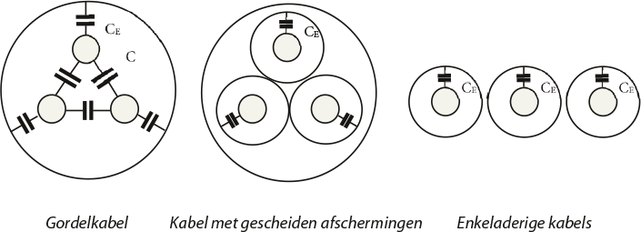Table 8.4 provides an approximation of the normal capacitanceC1) and the homopolar capacitance (C0) for the cable types in figure 8.1 (Happoldt, 1978). In this table,CEthe capacitance between a conductor and the shield and isCthe capacitance between two conductors.
Type of cable |
C1 |
C0 |
Gordelkabel |
CE+ 3 C |
0.6 C1 |
Separated shields |
CE |
C1 |
Single-core cable |
CE |
C1 |
From this, it follows that the homopolar capacitance can be easily expressed in terms of the capacitance of the normal system.
The homopolar impedance is significantly influenced by the return path. The return path consists of the path through the cable itself (including the shielding) and, in parallel, the path through the earth. The path through the earth consists of the ground electrodes (at least two) and the path through the earth itself. The return path through the earth runs as close as possible to the respective cable. As a result, the resistance of the path through the earth is usually different from purely theoretical calculations. Additionally, the return path through the earth has a reactive component, determined by the enclosed flux and the electromagnetic coupling with other conductive objects in the ground. Therefore, it is not easy to predict the extent of the influence of the parallel connection of the return path through the earth on the total homopolar impedance. Generally, it is true that the parallel connection of the earth reduces the homopolar resistance and increases the homopolar reactance.
The ground electrode is modeled with a resistance to the 'remote earth'. The resistance of the ground electrode depends on the specific soil resistivity.ρand the physical dimensions of the ground electrode. For a single round rod-shaped ground electrode, the following formula applies for calculating the ground spreading resistance (Happoldt, 1978):
| Ohms | [ |
8.24 |
] |
with:
| ρ | specific soil resistivity (Ωm) |
| L | length of the vertical electrode in the ground (m) |
| d | diameter of the ground electrode (m) |
The specific soil resistivity depends on the soil material and the amount of moisture and temperature of the soil. Table 8.5 provides an overview for the materials.
Bodemsoort |
ρ minimum [Ωm] |
ρ maximum [Ωm] |
Veen |
5 |
40 |
Klei |
20 |
200 |
Zand |
200 |
2500 |
Kiezel |
2000 |
3000 |
The difference between the minimum and maximum values of the specific soil resistivity is determined by the weight percentage of the moisture present in the material. This can be measured during the driving of the electrode, assuming that the measurement is representative of the lowest moisture content of the soil throughout the year.
In the Netherlands, the grounding electrode is often a driven electrode made of round copper wire with a diameter of 50 mm.2(d= 0.0075 m). Several other types are also used, such as solid steel (round, star-shaped, or cross-shaped) with a well-adhering copper layer on the surface and a galvanized round steel variant.
To create a grounding electrode with a ground resistance of less than 1 Ω, multiple parallel electrodes often need to be driven into the ground at a considerable distance from each other. According to the above formula, the ground resistance for a 10 m grounding electrode with a diameter of 7.5 mm in soil with a specific resistance of 100 Ωm is 13.7 Ω. The literature (Happoldt, 1978) provides formulas for calculating parallel or other forms of grounding electrodes.
Since the homopolar impedance of high-voltage cables cannot be calculated with great accuracy, measurements are necessary. Using these practical measurements, an estimate can be made for values that are useful in the planning of a new route. Moreover, numerous practical measurements show that the variation in the measurement results is considerable.
The symmetrical components transformation describes the relationship between the currents in the component network and the physical system (paragraph 7.5).
 |
[ |
8.25 |
] |
From this, it appears that the homopolar current is equal to one-third of the sum of the three phase currents. In the case of a three-phase symmetrical system with three-phase symmetrical currents, the homopolar current will be zero. If the three phase currents are not three-phase symmetrical, the current flowing through the return path is equal to the sum of the three phase currents and, according to equation 8.25, is equal to3I0From this follows the method to measure the homopolar impedance, by applying a homopolar voltage, as indicated in figure 8.2.
The homopolar impedance is measured using a power supply with a homopolar system. This is achieved by connecting the phases in parallel at both ends. At the end, this parallel connection is linked to the return conductor and possibly grounded. The return impedance, consisting of the parallel connection of the cable's return conductor and the return path through the ground, is represented in figure 8.2 byZEAt the beginning of the circuit, the parallel connection is fed single-phase to ground. The homopolar impedance is then the quotient of voltage and current. If the cable sheaths are grounded at both ends, the current is divided between the sheaths and the ground. With single-sided grounding (where the sheaths on the other side are floating and not connected to the sheaths of other cables), the return current flows only through the ground. The current through the ground is significantly influenced by other conductive objects in or on the ground, such as other cable sheaths, metal gas, and water pipes, and the like. Because the homopolar impedance is thus also dependent on the cable's surroundings, a universally valid homopolar impedance cannot be specified for a particular cable type. Sometimes a homopolar impedance is specified under the condition that the return current flows only through the sheaths. With three single-phase cables, these sheath currents are equal.
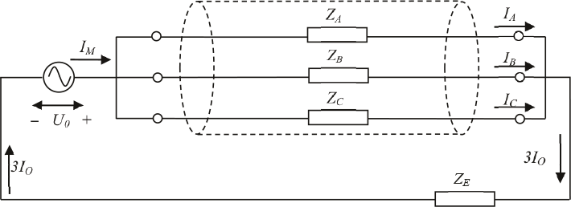In a three-phase symmetrical network,ZA= ZB= ZC= ZL,zodatIA= IB= IC= I0. Then follows for the measurement:
 |
[ |
8.26 |
] |
From this follows for the homopolar impedance:
 |
[ |
8.27 |
] |
and for the measurement:
[ |
8.28 |
] |
For planning purposes, the homopolar impedance can be estimated, depending on the situation, as a constant value or as a factor of the normal impedance.
In summary, the homopolar impedance of a cable connection is determined by the total circuit of the homopolar current. The total circuit consists of the forward path (the phase conductors) and the return path (the neutral conductors, the shielding and armor of the cable, plus the ground via the ground electrodes (including in medium voltage spaces) and any other contact with the ground. Conductive materials present in the ground (other cables, metal pipes, and railroad tracks) can significantly influence the homopolar impedance.
It is possible to calculate the homopolar impedance of a cable for cases where the return circuit consists of the sheath and possibly a neutral conductor. This is also the value that the manufacturer usually provides. However, if the return current (as in most practical cases) also flows through the ground, the homopolar resistance will decrease and the homopolar reactance will increase. The value in those cases is very difficult to calculate, and the calculation is usually inaccurate.
For certain cable types and situations, the homopolar impedances have been calculated for the case where the return path runs only through the cable itself. All provided values are for informational purposes only. The ratios of the homopolar to the normal impedances are summarized below. The results vary for cables with small to large conductor diameters.
Cable type |
Zero return |
Zero return + sheath |
||
R0/R1 |
X0/X1 |
R0/R1 |
X0/X1 |
|
LS 4-core cable (25..300 mm) |
4.0 |
3.5..4.0 |
2.5..3.0 |
1.5..2.0 |
Type of cable |
Return sheath |
|
R0/R1 |
X0/X1 |
|
MS belt cable (25..300 mm) |
4..15 |
1.7..1.4 |
MS 3-core XLPE (50..300 mm) |
7..20 |
1 |
MS 1-core XLPE (95..400 mm) |
7..18 |
0.4..0.3 |
For calculations regarding touch safety, specific cable data is required, which cannot be directly derived from the tables provided by cable manufacturers. These tables only contain information about the use of the cable under normal conditions and its behavior during a short circuit. However, in the case of a single-phase ground fault, the short-circuit current influences the voltage in the other conductors through induction. The electromagnetic couplings between the conductors of the cable and between the conductors and the ground shield are not documented and must be calculated. This concerns PVC and GPLK cables with sector-shaped and round conductors, both copper and aluminum, with and without auxiliary cores. In this section, the impedances of the cables are calculated using a program for analyzing electric and magnetic fields in rotationally symmetric cross-sections.
The low-voltage cable is composed of:
A typical cross-section of the conductive parts of an LS cable with circular and sector-shaped conductors is shown in figure 8.3 for a cable of the type GPLKh 4x35 Cu round + 4x2.5 Cu and of the type GPLKh 4x95 Cu sector + 4x6 Cu. From the inside out, the following are visible: main cores and auxiliary cores with insulation, shield, filling, armoring, and outer sheath.
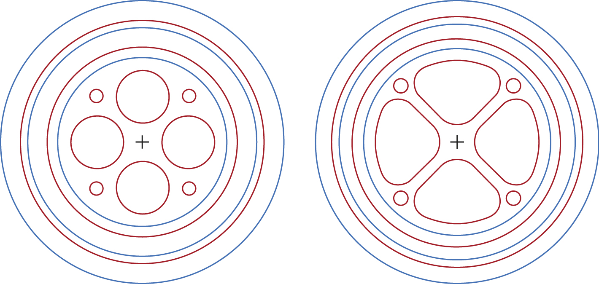It is clearly visible that the contact surfaces between the conductors themselves and between the conductors and the sheath are much larger in the case of sector-shaped conductors than with round conductors. As a result, the mutual coupling is stronger in sector-shaped conductors.
When distinguishing between phase conductors, neutral conductor, auxiliary conductors, and shield, up to 11 different impedances can be identified in the low-voltage cable:
| Zc | longitudinal impedance of the main conductor circuit (phase and neutral) |
| Zcc,n | mutual impedance of adjacent main conductors |
| Zcc,t | mutual impedance of main conductors located opposite each other |
| Ze | longitudinal impedance of the shielding circuit |
| Zce | mutual impedance of main conductor and shield |
| Zh | longitudinal impedance of the auxiliary conductor circuit |
| Zch,n | mutual impedance of adjacent main and auxiliary conductors |
| Zch,t | mutual impedance of opposing main and auxiliary conductors |
| Zhh,n | mutual impedance of 'adjacent' auxiliary conductors |
| Zmutual impedance of 'opposing' auxiliary conductors | mutual impedance of 'opposing' auxiliary conductors |
| Zhe | mutual impedance of auxiliary conductor and shield |
In matrix form:
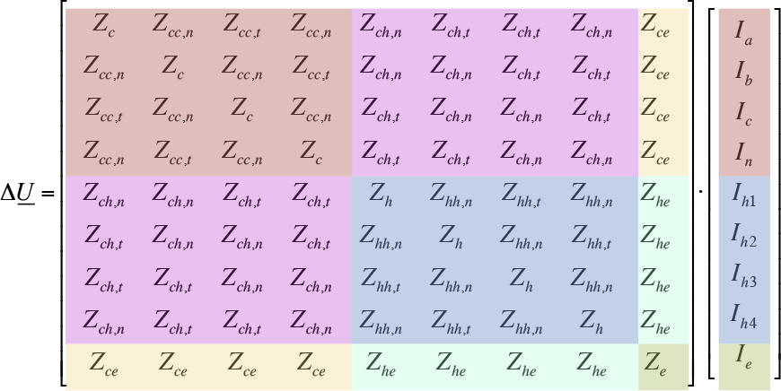The cable consists of 3 identical phase and neutral conductors. If the neutral conductor differs from the phase conductors, the numbers in column 4 and row 4 of the matrix change. Optionally, 4 identical auxiliary conductors may be present. If the auxiliary conductors or the conductive shield are missing, the respective impedances are not present in the matrix.
The operational impedance of a cable is not the same as the longitudinal impedance of a main conductor circuit, but is calculated from the individual impedances of the entire cable as a closed system. Thus, the operational impedance can be calculated from the longitudinal impedance of a main conductor circuit.Zcand the average of the mutual impedances from one phase conductor to an adjacent phase conductorZcc,nand from one phase conductor to an opposite phase conductorZcc,t.
[ |
8.29 |
] |
Similarly, the internal homopolar impedance of the cable can be calculated:
[ |
8.30 |
] |
Transformers come in many types and sizes. For the connection between high-voltage (HV) and medium-voltage (MV) levels, power transformers with nominal capacities ranging from 10 to 70 MVA are used. These are usually two-winding transformers, but in some cases, three-winding transformers (150/50/10 kV) are also used. The distribution transformers between MV and low-voltage (LV) levels are standardized. These standard transformers are available for capacities from 50 to 1600 kVA. Additionally, in extensive networks, regulating transformers are sometimes used to improve the voltage profile.
The transformer windings are connected in three ways, namely in star, delta, and zigzag configurations. Additionally, the phases can be interchanged so that the phase angle can be adjusted in steps of 30 degrees. Since there are 12 possibilities for this, it is indicated by the clock number. The rotation direction of the three-phase system can also be reversed by this means. To avoid misunderstandings, transformers are classified according to winding configuration and clock number.
Table 8.7 provides an overview of the main possibilities for transformers with two windings. In this, the letter indicates whether the winding configuration is star (Y), delta (D), or zigzag (Z). The capital letter indicates the primary side, and the lowercase letter indicates the secondary side.
If the neutral point of one of the windings can be connected, this is indicated by the letter N for the primary winding and n for the secondary winding. A commonly used distribution transformer has the Dyn5 configuration.
Klokgetal |
Schakeling |
Primair | Secundair |
0 |
Dd0 |
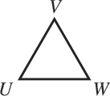 |  |
Yy0 |
 |
 |
|
Dz0 |
 |
||
5 |
Dy5 |
 |
|
Yd5 |
|
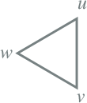 | |
Yz5 |
 |
||
6 |
Dd6 |
 |
|
Yy6 |
|
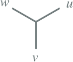 | |
Dz6 |
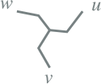 | ||
11 |
Dy11 |
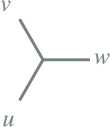 | |
Yd11 |
|
 |
|
Yz11 |
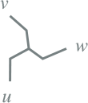 |
On the high voltage side, a star winding is usually chosen because the star point is available in those networks and the transformer can be impedance-grounded. Medium voltage networks often have a floating star point, and therefore a delta winding is usually chosen at this voltage level. If the medium voltage network still needs to be grounded, this will be done with a separate grounding transformer. Low voltage networks are usually solidly grounded, so a star winding is chosen at this voltage level. The zigzag winding is less common, except in grounding transformers.
When paralleling transformers, careful attention must be paid to the clock number and winding configuration. It is possible to parallel transformers with different winding configurations. However, this should not be done without proper consideration. The terminals of the different transformers must be correctly swapped to achieve the correct clock number and phase sequence on the secondary side of the transformer. The diagram below provides an example of paralleling a Dy5 and a Dy11 transformer. The paralleling is achieved by connecting the primary side terminals of the Dy11 transformer.UenVto swap and on the secondary side the terminalsvenwto swap.

In addition to the winding configuration, the transformer is characterized by its nominal power and the nominal primary and secondary voltage. The transformation ratio is the quotient of the primary and secondary voltage:
 |
[ |
8.31 |
] |
The nominal voltages apply to the transformer and not to the windings. The nominal voltages are line-to-line voltages. This means that in a delta winding, this voltage is also present across each of the windings. In a star winding, the voltage across a winding is √3 times smaller than the nominal voltage.
Most transformers are equipped with a tap changer, which allows the turns ratio to be adjusted in steps. If the tap changer is in the neutral position, the transformer has the nominal turns ratio. By selecting a different tap position, the turns ratio changes by the number of steps times the voltage per step. If a single step corresponds to a voltage ΔV, the turns ratio for n steps relative to the neutral position is:
 |
[ |
8.32 |
] |
The taps are numbered and usually arranged so that a higher number corresponds to a higher secondary voltage, even though the tap changer is on the primary side. The voltage change per step is usually 1.3 to 2% of the nominal voltage.
A HV/MV power transformer is usually equipped with an adjustable tap changer, which is controlled by a system that measures the voltage on the MV side and tries to keep it within limits. The principle is explained in paragraph 4.3. Because the system controls a discrete tap changer, it is not possible to set the voltage on the secondary side to an exact desired value. In fact, two or more tap positions may be possible, depending on the step size relative to the voltage regulation band.
With the nominal power and the nominal voltages, the nominal currents on the primary and secondary sides can be calculated:
[ |
8.33 |
] |
Two other important parameters are the relative short-circuit voltageukand the short-circuit lossPkThe short-circuit voltage is the voltage that must be applied to the primary side of the transformer so that the nominal current flows when the secondary side is short-circuited. The relative short-circuit voltage is expressed as a percentage of the nominal voltage. The short-circuit loss, also known as copper loss, is responsible for the heating of the transformer due to the power being transmitted. These two parameters are used to calculate the transformer impedance:
[ |
8.34 |
] |
In the above equations, the transformer impedance is referred to the secondary side. If the transformer impedance needs to be referred to the primary side, the same calculation is performed using the nominal voltage on the primary side. The relationship between the two values is the square of the turns ratio:
 |
[ |
8.35 |
] |
The copper loss of the transformer is calculated using the resistance and the actual current, either on the primary or the secondary side:
[ |
8.36 |
] |
The transformer also has a no-load loss. This is caused by eddy current loss.Pnullastin the iron core. This eddy current loss is modeled with a main field resistance Rf. Additionally, there is the magnetizing current, which is caused by the main field reactanceXμThe eddy current loss and the magnetizing current are measured together at no load in the no-load current.InullastThe no-load loss and the no-load current are measured at nominal voltage. This leads to the equivalent circuit of figure 8.5.

The main field resistance and the main field reactance can be calculated from their parallel connection and the measurement ofPnullastenInullastIf the no-load measurement is performed on the secondary side of the transformer, the no-load impedance is calculated from:
[ |
8.37 |
] |
The main field resistanceRfand the magnetizing reactanceXmare then calculated using:
[ |
8.38 |
] |
 |
[ |
8.39 |
] |
The actual no-load loss is therefore dependent on the voltage and can then be easily calculated with:
 |
[ |
8.40 |
] |
In summary, the loss of the transformer consists of two parts. One part, the copper loss, is quadratically dependent on the current through the transformer and depends on the operating time of the transformer. The other part, the no-load loss, is quadratically dependent on the voltage and is always present as long as the transformer is in operation:
 |
[ |
8.41 |
] |
Most transformers are constructed with two windings. Many power transformers and industrial transformers that supply converters and rectifiers are equipped with three windings. A power transformer is often of the YNynd type, where the primary winding and the secondary winding have a star connection with a grounded neutral point, and the tertiary winding has a delta connection with a floating neutral point. This transformer can be adjustable with a tap changer at the high voltage level on the primary winding. The secondary winding can have an adjustable tap changer that is not adjusted during operation. A transformer that supplies a converter or a rectifier is usually not adjustable in distribution networks.
The power that the three windings can handle is usually not equal. Often, the tertiary winding has a lower power rating. Therefore, the nominal power of each winding is specified. As a result, the through powers are always equal to the minimum of the two respective windings:
 |
[ |
8.42 |
] |
While only one measurement is needed to determine the short-circuit voltage in a two-winding transformer, three measurements are required for a three-winding transformer. The short-circuit voltage is measured on two of the three windings, with the winding having the lowest power being short-circuited. The third winding remains open. A voltage is then applied to the winding with the highest power such that the nominal current flows in the winding with the lowest power. Short-circuit voltage and short-circuit power are always defined in a fixed direction: primary - secondary (1-2), primary - tertiary (1-3), and secondary - tertiary (2-3). Often,uk,ijenPk,ijrefers to the (smaller) continuous power of the windingito windingj. It happens that in test reportsuk,ijenPk,ijare not related to the (smaller) continuous power, but to the power of the winding with the highest power, for exampleuk,ij,largeenPk,ij,large. In that case, mustuk,ij,largeenPk,ij,largemust be converted to the corresponding (smaller) continuous power according to the formulas below. The voltage does not appear in this conversion.
[ |
8.43 |
] |
The transformer impedances are derived from the short-circuit voltage and the short-circuit loss. First, the magnitudes of the impedances are determined. Next, the resistances are calculated, and from those, the reactances. For the purpose of the calculations, the transformer impedances are usually referenced to the same voltage level. The formulas below provide the calculation forZTenRT, referred to the primary side (1).
[ |
8.44 |
] |
Finally, the reactance isZT,ijenRT,ijdetermined:
[ |
8.45 |
] |
Figure 8.6 provides the equivalent circuit for the three-winding transformer, with the impedances referred to the primary side. In this diagram, the turns ratio is omitted. This diagram is therefore useful for calculations that are referred to a single voltage level, for example, on the primary side. For the application of this equivalent circuit, all impedances must be referred to that same voltage level. The equivalent circuit is also applicable for another voltage level, but then the impedances must be referred to the side corresponding to that voltage level. The impedances are then calculated by using the above formulas instead ofUnom,1to use the other desired voltage level.

In the replacement diagram of the three-winding transformer, the relationship between the internal impedances is straightforward.Z1,Z2enZ3and the transformer impedancesZ12,Z13enZ23visible. The internal impedances can be easily derived from the transformer impedances:
[ |
8.46 |
] |
The no-load loss is determined in the same way as with the transformer with two windings. The no-load loss and the no-load current are measured on one of the windings, and the impedances can be related to any other winding by converting them.
As an example, the impedances of a YNynd transformer for HV, LV, and MV are calculated. The nameplate data are listed below.
Gegeven |
Primair |
Secundair |
Tertiair |
Eenheid |
Unom |
150 |
52.5 |
10.5 |
kV |
Snom |
100 |
100 |
27 |
MVA |
Primary - Secondary |
Primary - Tertiary |
Secondary - Tertiary |
||
uk |
14.8 |
9.3 |
4.9 |
% |
Pk |
465 |
78 |
69 |
kW |
All impedances in this example are referenced to the high voltage side, thus at the nominal voltage of 150 kV. For the magnitudes of the impedances, the following applies:
[ |
8.47 |
] |
For the resistances, after substitution, the following applies:
 |
[ |
8.48 |
] |
From this, the reactances ultimately follow:
 |
[ |
8.49 |
] |
The reactances are in this case approximately equal to the magnitudes of the impedances because the resistances are relatively small. The internal impedances of the equivalent circuit can now be calculated:
 |
[ |
8.50 |
] |
Notably, one of the reactances has a small negative value. This is the reactance of the winding that is located in the middle of the two other windings (Happoldt, 1978). The reactances of the two other windings, placed on the inside and outside, are approximately equal to the short-circuit reactance between them and the winding placed in the middle.X1≈ X12enX3≈ X23).
For a transformer, the same applies as for the connection, if the phase angle shift is disregarded. Due to the construction of the transformer, it can be assumed that it is sufficiently three-phase symmetrical. The inverse impedanceZ2is therefore equated to the normal impedanceZ1For most applications, such as load flow and short-circuit calculations, this approach is sufficient. However, if the phase shift must be taken into account in the modeling, it is incorporated into the transformation ratio. In the inverse system, the transformation ratio is equal to the complex conjugate of the transformation ratio in the normal system.
In transformers, the neutral point can be loaded if it is grounded through a coil or resistor. For transformers with Yd, Dy, Yz, and Yyd winding configurations, the neutral point is generally fully loadable and can carry the nominal current. In the Yz transformer, this loadability applies to the zigzag winding, and in the Yyd transformer, it applies to one of the two star windings. In these transformers, a homopolar current can flow, making the homopolar parameters important.
The construction of the transformer core and the transformer tank does not affect the normal and inverse impedances, but it does affect the homopolar impedances. The homopolar impedance of the transformer does not depend on the dispersion of the magnetic fields, but on the electrical configuration of the windings and the magnetic configuration of the transformer core.
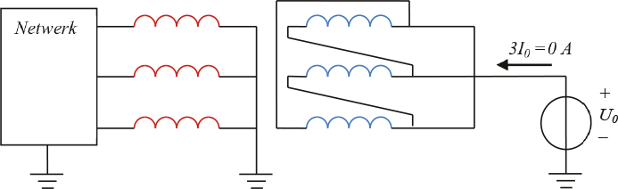The homopolar impedance of a star-delta transformer is infinite when viewed from the delta side, because the delta configuration has no connection to the ground. Figure 8.7 illustrates what happens when the delta winding is connected to a homopolar voltage source. Since the circuit is not closed, no current flows under normal conditions.
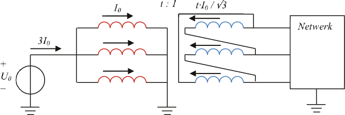If the transformer is fed from the delta winding on the secondary side and if a phase-to-ground fault occurs on the star winding on the primary side, a homopolar short-circuit current will flow in the primary circuit.Ik"flow, as shown in figure 8.8. This current flows only through the coil located in the faulty phase. This current is transformed with the transformation ratiotto the magnetically coupled coil in the secondary circuit. Because the primary coils are connected in a star configuration and the secondary coils in a delta configuration, the factor √3 appears in the transformation of the current. As a result, a current will flow in two phases on the supply side in the secondary circuit. However, this current in the secondary circuit is not a homopolar current, because there is no contact with the ground on that side of the transformer.
For the star winding, the homopolar reactance is approximately the same as the short-circuit reactance. The homopolar currents in the star winding are balanced by the current in the delta winding. Figure 8.9 illustrates that when a homopolar voltage source is applied to the star winding, the homopolar current is distributed across the three primary phase coils. These currents are transformed according to the turns ratio.tand the factor √3.
The transformed current flows through all the coils of the secondary winding. Since the phasors of these currents in all secondary coils are equal in magnitude and direction, they are short-circuited by the delta connection. This explains that the homopolar reactance in this direction is approximately equal to the normal short-circuit reactance. Therefore, the transformed currents do not flow into the network. If a phase-to-ground fault occurs in the secondary circuit, it will not be noticeable in the primary circuit. The homopolar equivalent circuit of this transformer configuration is given in Table 8.9.
In the homopolar situation, a star winding is magnetically coupled with other star windings or with delta windings. However, a zigzag winding is not coupled with other windings (see Figure 8.10). The homopolar reactance of a star-zigzag transformer or a delta-zigzag transformer is determined solely by the leakage between the zig and zag windings, because no homopolar currents are induced in the star or delta windings (Figure 8.10).

Since the 'zig and zag windings' belong to the same circuit and are therefore relatively close to each other, the leakage and consequently the homopolar reactance is small. The homopolar reactance corresponds to the short-circuit reactance between the two sub-windings and is in the order of 0.1 to 0.2 times the short-circuit reactance.
A neutral grounding transformer is a coil with only a zigzag winding. This allows for the creation of an impedance-grounded neutral point in an ungrounded network. This transformer is used in medium voltage networks with an ungrounded neutral when the designer decides to provide the ungrounded network with a grounded neutral point, for example, for safety reasons. Any phase-to-ground fault in the medium voltage network will now cause a homopolar current, which will flow through the neutral grounding transformer and can be detected by the protection system. More about the neutral grounding transformer can be found in section 8.4.
A YNy winding configuration is generally not recommended for three-phase transformers because they have a relatively high zero-sequence impedance. In these transformers, unlike the delta-star transformer and the transformer with zigzag winding, balance in Ampere-turns is not possible. The value of the zero-sequence impedance is largely determined by the construction of the transformer core, which affects the reluctance (magnetic resistance) and the magnetizing reactance. The magnetizing reactance is inversely proportional to the reluctance. The reluctance of the path for the magnetic flux outside the iron core is many times higher than that of the path through the iron core. Therefore, in general, the magnetizing reactance is high when the path of the magnetic flux is entirely within the iron core. If the flux is forced to travel outside the iron core, the magnetizing reactance is low. Finally, the zero-sequence reactance is determined by the sum of the leakage reactance and the magnetizing reactance.
Most three-phase transformers are composed of three separate single-phase transformers or are built around a core with five or three 'legs'.
Three separate single-phase transformers
Figure 8.11 shows the configuration with three separate transformers. In each separate core, the homopolar magnetic flux can flow completely, resulting in very low reluctance. The magnetizing reactance is inversely proportional to the reluctance and is very high. Consequently, the homopolar impedance, which is determined from the sum of the leakage reactance and the magnetizing reactance, is also high (Tleis, 2008). The ratio X0/X1 of the homopolar to the normal transformer reactance is in the order of magnitude of 10 to 100 (Happoldt, 1978).

Star-star transformer with five-legged iron core
Figure 8.12 shows the three-phase transformer with a five-legged iron core. In this transformer, the homopolar magnetic fluxes can completely close over the path via the outer two legs, resulting in very low reluctance. Consequently, the homopolar reactance can reach very high values. However, there is a risk that in the event of a phase-to-ground short circuit, the outer two legs of the iron core may become saturated, which reduces the value of the homopolar impedance (Tleis, 2008). The ratio of X0/X1 is in the order of magnitude of 10 to 100 (Happoldt, 1978).
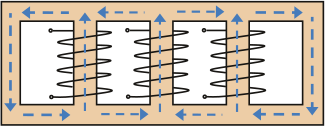Star-star transformer with three-legged iron core
Figure 8.13 shows the coils and the core of a three-phase transformer with a three-legged iron core. With a three-phase symmetrical current through the coils, the magnetic fluxes in the core also exhibit the same three-phase symmetry, resulting in the three magnetic fluxes canceling each other out in the iron core. However, the homopolar currents magnetize the three legs of the transformer core in the same direction. In that case, the sum of the magnetic fluxes in the three legs is not equal to zero. The magnetic fluxes then need to find a return path outside the iron core. As a result, in such transformers, the sum of the magnetic fluxes will close through the air and over the transformer tank. The transformer tank thus has the same effect as an additional delta winding.
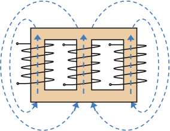The reluctance of the flux path outside the iron core is high, resulting in a low magnetizing reactance. The resulting homopolar reactance is smaller than that of the transformer with a five-legged core but greater than the normal short-circuit reactance. The ratio of X0/X1 is in the order of magnitude of 3 to 10 (Happoldt, 1978).
In situations of asymmetry in the three-phase system, the homopolar current can become quite large. Because the magnetic fluxes close within the transformer tank, it can heat up to an unacceptably high temperature.
To improve performance in situations where a homopolar current flows, transformers with a star-star winding configuration are usually equipped with a third delta winding, where the homopolar currents can flow in a controlled manner. The ratio of X0/X1 for this type of transformer ranges from approximately 1 to 2.4 (Happoldt, 1978).
Table 8.8 provides an overview of the homopolar reactanceX0of several transformers, expressed as a factor of the normal short-circuit reactanceX1. The factors apply to the side of the transformers whose neutral point is grounded, indicated by the letterNofn.
Transformatorkern |
Ratio X0/X1 for connection |
|||
Yzn |
YNd or Dyn |
YNy + D |
YNy or YNz |
|
Three cores |
0.10 --- 0.15 |
0.7 … 1.0a) |
1 … 2.4b) |
3 .. 10b) |
Five cores |
0.10 --- 0.15 |
1.0 |
1 … 2.4b) |
10 .. 100b) |
Three separate single-phase transformers |
0.10 --- 0.15 |
1.0 |
1 … 2.4b) |
10 .. 100b) |
Using table 8.8, the homopolar impedances of the transformer can be estimated. First, the correct homopolar equivalent circuit for the winding configuration must be selected from table 8.9. Table 8.9 contains the homopolar transformer impedances and the external neutral point impedance.Zedisplayed.
For example, for the YNynd transformer in the example of paragraph 8.3.4, according to table 8.8, the ratio ofX0/X1between 1.0 and 2.4. In this explanatory example, it is assumed that the ratio is 1.0 and that the method also applies to the resistance. For the internal homopolar impedances of the equivalent circuit in table 8.9, this means that when using the calculated values of the internal impedances of the normal component system according to equation 8.50:
Z0.1= Z1= 0.7 + j35.0 Ω
Z0.2= Z2= 0.4 – j1.7 Ω
Z0.3= Z3= 1.7 + j42.5 Ω
For a YNynd three-winding transformer, the normal transformer impedances are first calculated from the nameplate data and then the internal impedances.Z1,Z2enZ3the equivalent circuit of figure 8.6. The ratio ofX0/X1for this type of transformer lies between 1.0 and 2.4. It is also assumed for this transformer that this ratio can be applied to the resistance. With the ratio, the impedances can nowZ0.1,Z0.2enZ0.3be calculated. In the equivalent circuit, it is assumed for all circuits in table 8.9 that all impedances are referred to the voltage level of the primary side. Therefore, for the YNynd transformer configuration, the grounding impedance can be referred to the primary winding.Ze1simply be filled in the equivalent circuit. However, the grounding impedance on the secondary side must first be converted to the voltage level of the primary side by multiplying the value by(U1/U2)2. If the secondary winding is not grounded, then forZe2infinity is substituted.
Configuratie |
Schakeling |
Zero-sequence equivalent circuit |
YNy |
 |
 |
YNd |
 |
|
ZNy |
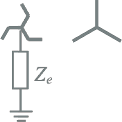 | |
ZNd |
 |
|
YNynd |
 |
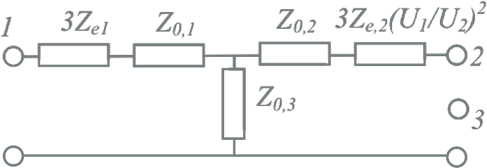 |
If the estimation method is not found to be sufficiently accurate, the zero-sequence impedances must be measured. Depending on the type of transformer and the applied configuration in the windings, 1, 2, or 3 measurements are needed. In the case where no neutral point is implemented, a zero-sequence measurement is not possible. A zero-sequence measurement can only be conducted from a YN or ZN winding. In the case of a transformer with a YNd configuration, a measurement on the primary side with the star winding is sufficient. In the case of a transformer with a YNynd configuration, at least three measurements must be performed. This can be done in the following two ways.
If it is possible to open the delta winding (some transformers have a provision for this), the homopolar impedances from winding 1 to 2, from 1 to 3, and from 2 to 3 can be measured directly (Kraaij). The measurement is performed by applying a homopolar voltage to the three parallel-connected coils on the side to be measured. The following method is used for this purpose:
Meting |
Primary winding |
Secondary winding |
Tertiary winding |
Z0.12 |
Homopolar voltage |
Kortsluiten |
Open delta |
Z0.13 |
Homopolar voltage |
Leave open |
Close delta |
Z0.23 |
Leave open |
Homopolar voltage |
Close delta |
All measured impedances must then be referenced to the same voltage level, for example, from the primary side. After this, the impedances canZ0.1,Z0.2enZ0.3of the equivalent circuit can be calculated in the same way as the normal impedances.
Impedantie |
Measured value (Ω) |
Referred to the primary side (Ω) |
Z0.12 |
1.1 + j33.3 |
1.1 + j33.3 |
Z0.13 |
2.4 + j77.5 |
2.4 + j77.5 |
Z0.23 |
0.3 + j5.0 |
2.5 + j40.8 |
From this, the impedances canZ0.1,Z0.2enZ0.3can be calculated from the replacement diagram:
[ |
8.51 |
] |
If it is not possible to open the delta winding, a slightly modified method is followed during the measurement. Specifically, when measuring from winding 1 to winding 2, with winding 2 short-circuited, the non-opened winding 3 is also included in the measurement. Essentially, the impedance is then measured from winding 1 to the parallel connection of windings 2 and 3. This is indicated with // in the index. Conversely, the impedance is measured from winding 1 to 3 and from winding 2 to 3.
Meting |
Primary winding |
Secondary winding |
Tertiary winding |
Z0.12//3 |
Zero-sequence voltage |
Kortsluiten |
Delta closed |
Z0.13 |
Zero-sequence voltage |
Leave open |
Delta closed |
Z0.23 |
Leave open |
Zero-sequence voltage |
Delta closed |
All measured impedances must then be referenced to the same voltage level, for example, from the primary side. After this, the impedances canZ0.1,Z0.2enZ0.3can be calculated from the equivalent circuit. The derivation of the formulas below is not provided here.
 |
[ |
8.52 |
] |
Impedantie |
Measured value (Ω) |
Referred to the primary side (Ω) |
Z0.12//3 |
1.1 + j33.2 |
1.1 + j33.2 |
Z0.13 |
2.4 + j77.5 |
2.4 + j77.5 |
Z0.23 |
0.3 + j5.0 |
2.5 + j40.8 |
From this, the impedances canZ0.1, Z0.2and Z0.3can be calculated from the replacement diagram:
 |
[ |
8.53 |
] |
When measuring a YN winding, there may be a coupling with another winding. For instance, there is always a coupling to a delta winding. However, a zigzag winding is not homopolar coupled. A ZN winding can always be measured directly.
In a YNdzn transformer, two independent measurements are performed, namely a measurement from the YN winding to the d winding and a measurement of the zn winding.
The impedance from the neutral point to ground belongs in the homopolar scheme. As described in paragraph 8.2.7, this impedance must be multiplied by 3 for inclusion in the homopolar component network.
 |
[ |
8.54 |
] |
A transformer connects two or more networks of different voltage levels. The international standard IEC 60909 prescribes that for short-circuit calculations according to that standard, a correction factorKTon the impedance of the normal system is applied. This factor represents the influence of the transformer being in operation through a correction on the impedance. The correction factor is calculated as follows:
[ |
8.55 |
] |
where:
| cmax | voltage parameter for the short-circuit calculation; 1.05 for low-voltage networks with a tolerance of +6% and in all other cases 1.1 |
| xT | per unit value of the reactance:xT= XT/ (Unom,T2/ Snom,T) |
This correction factor is applied to the transformer impedances in the normal, inverse, and homopolar systems. For transformers with two windings, the corrected impedances are:
 |
[ |
8.56 |
] |
For a three-winding transformer, three correction factors are determined:
[ |
8.57 |
] |
This correction factor is applied to the transformer impedances in the normal, inverse, and homopolar systems. For transformers with two windings, the corrected impedances are:
| en | [ |
8.58 |
] |
Afterward, the corrected impedances are converted to the internal transformer impedances of the equivalent circuit.
The correction factor is not applied to any grounding impedance that may be present between the neutral point and ground.
When energizing an unloaded transformer, inrush currents occur. These currents can reach values of 10 to 15 times the nominal current. These currents affect transformer protection and cause voltage dips. The magnitude of the inrush current can be determined by measurement or by calculation.
The inrush current is caused by the presence of residual flux in the transformer core that can remain for a long time after switching off. Depending on the moment in the 50 Hz voltage sine wave when switching on occurs, this flux, combined with the buildup of flux after switching on the mains voltage, can lead to saturation of the iron core. The inrush current is characterized by a strong second harmonic. The inrush current diminishes relatively slowly. This is dependent on the R/X ratio in the supplying network.
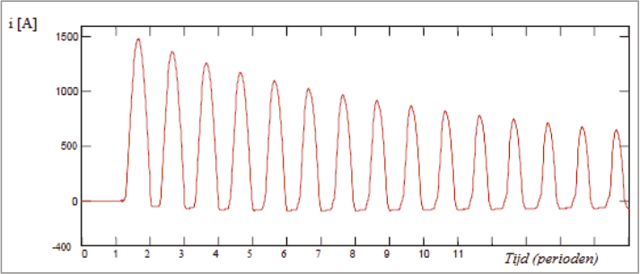There are models for calculating the inrush current, but these are complex and use parameters that the network planner usually does not have at their disposal. In many cases, only the maximum value of the inrush current is important. This value can be approximated using a short-circuit calculation, where the transformer is short-circuited on the secondary side. In the case of a network with impedanceZQ(equation 8.2) and a transformer with impedanceZT(equation 8.34) is the maximum value of the inrush current:
[ |
8.59 |
] |
A grounding transformer and a neutral point transformer are essentially the same device. Both are constructed as a zigzag transformer. These transformers are used in medium voltage (MV) networks and low voltage (LV) networks. In MV networks that are supplied with a Yd transformer, there is no neutral point on the secondary side of the transformer. If a neutral point is desired in these networks so that the network can be impedance-grounded, a grounding transformer is used. In LV networks, it can occur that the loads are distributed asymmetrically across the phases to such an extent that the phase voltages differ from each other. The result is that a current flows through the neutral conductor, causing additional losses, and furthermore, the voltage on the neutral conductor is no longer zero (neutral point shift). This phenomenon is most pronounced in extensive LV networks with relatively few connections.
A neutral point transformer reduces the imbalance of currents in the LV network and thereby the imbalance of voltages.
By applying the grounding or neutral point transformer, the current distribution in the network changes. In the case of a single-phase load in an LV network, this reduces the voltage drop of the loaded phase relative to the neutral conductor. At the same time, it reduces the voltage rise on the unloaded phases relative to the neutral conductor.
A grounding or neutral point transformer is essentially a three-phase transformer with a turns ratio of 1. The windings on a three-legged core are connected in a zigzag configuration, as shown in figure 8.15. When the transformer is connected to a normally symmetrical three-phase system, the impedance is very high. Only the magnetizing current flows then. The voltage at the neutral point of the neutral point transformer is then zero.

If a homopolar current flows through the transformer, the homopolar impedance is very small. This is demonstrated with the help of figure 8.15. This figure shows the operation of a grounding transformer in a medium voltage network, where a short circuit is created between phase C and the ground. The arrows along the windings indicate the direction of the current.I0on. The field direction is thus coupled. It turns out that in each leg of the yoke, the magnetic fields cancel each other out, resulting in very low reactance. Since the copper resistance of the coils is small, it can be considered a short-circuit situation. For equal currents in the same direction, the neutral point transformer therefore has negligible impedance. The short-circuit current is3I0. In each phase, 1/3 of the total (homopolar) short-circuit current flows, namelyI0On the supply side, it is visible how the currents are distributed over the three phases, namely 1/3 of the short-circuit current over the undisturbed phases and 2/3 of the short-circuit current over the disturbed phase.

Figure 8.16 shows the situation of a neutral point transformer under an asymmetric load in an LV network. In the network, a single-phase load is connected between phase L3 and the neutral conductor, resulting in a current ofIflows. Without the neutral point transformer, the return current would flow through the neutral conductor. By using the neutral point transformer, ideally, one-third of the return current flows through each of the windings, resulting in no current flowing through the neutral conductor on the supply side. This ensures a better distribution of currents through the phase conductors: 1/3 through the unloaded phase conductors and 2/3 through the loaded phase conductor. In practice, the neutral point transformer is not ideal and has a certain impedance, which means not all the return current is removed from the neutral conductor by the transformer.
The neutral point transformer has no effect on the normal and inverse component systems and therefore has no equivalent circuit in those systems. The equivalent circuit in the homopolar system is given in Table 8.10. This includes the homopolar impedance of the grounding transformer and the external neutral point impedance Z.eshown.
Configuratie |
Schakeling |
Homopolar equivalent circuit |
ZN |

|
The homopolar impedance of a grounding or neutral point transformer is measured in the same way as for a cable, as described in paragraph 8.2.7. During the measurement, the three phases of the transformer are connected to each other. A voltage source with voltage is applied across the three terminals and the neutral.U0connected. The measured current from the power supply is, according to figure 8.1, equal toIMand this branches into three currents ofI0 that flows through each of the phases. The homopolar impedance of the neutral point transformer is then:
[ |
8.60 |
] |
The possibly present grounding impedanceZsterpuntis in series with the transformer and must be multiplied by 3 for the calculations and added to the homopolar transformer impedance:
 |
[ |
8.61 |
] |
A neutral point transformer in an LV network is sometimes combined with a voltage regulator, which is connected to several taps of the windings.
In MV distribution networks, chokes are used to limit short-circuit currents. They are placed in the substation at the beginning of the medium-voltage line, right after the circuit breaker. Due to the impedance of the choke, the line is electrically extended, thereby reducing the short-circuit power behind the choke. This limits the damage caused by short-circuit currents.
The choke is designed for a specific nominal current and impedance. Often, the nominal current and impedance are not provided, but rather the nominal power, the relative short-circuit voltage, and the short-circuit power. The following equations indicate how these parameters can be converted into each other.
[ |
8.62 |
] |
Usually, the resistance is much smaller than the reactance. For a choke coil ofUS,nom= 10 kVapplies, for example:
SS,nom= 5.8 MVA
uk= 1.74%
Pk= 2.69 kW
This corresponds to:
Inom= 335 A
RS= 0.008 Ω
XS= 0.3 Ω
It is often assumed that for a choke coil, the homopolar impedance and the inverse impedance are equal to the normal impedance:
ZS,0≈ ZS
ZS,2≈ ZS
The load in an electrical grid is the sum of currents drawn by an unspecified mix of devices of various kinds, such as motors, lighting, and power electronics. In industry, the load mainly consists of motors. In a residential area, it mainly consists of lighting and, to a lesser extent, motors and electronic devices. On a national scale, the load is formed by industrial networks and distribution networks. It should be clear that the load does not exist. If a load does not need to be broken down into specific types, a general aggregated load will suffice.
The load is specified by the absorbed three-phase power or the absorbed current and the power factor. Both can be converted into each other. For the three-phase power, the following applies:
[ |
8.63 |
] |
Where:
| S | three-phase complex power |
| P | three-phase active power |
| Q | three-phase reactive power |
| U | line-to-line voltage |
| I | fasestroom |
| cos(φ) | arbeidsfactor |
By using Ohm's law, the load can also be expressed as a function of the voltage and the load impedance.Z:
[ |
8.64 |
] |
The above formulas show that the load is not always constant but depends on the voltage. The load model is chosen according to the voltage-dependent behavior. If the load is represented by a constant impedance, the actual value of the absorbed load depends on the square of the voltage. In that case, the absorbed current increases linearly with increasing voltage. If the load is represented by a constant absorbed current, the actual value of the absorbed load is linearly proportional to the voltage. It is also possible to model the load with a constant absorbed power. In that case, the absorbed current decreases inversely with increasing voltage.
The behavior of the load with respect to changes in voltage is determined by the mix of devices it represents. Specifically, the difference in voltage level is crucial for the mix of devices and thus for the voltage-dependent behavior. Table 8.11 provides an overview of the voltage-dependent behavior of various types of loads, where the load is composed of a mix of constant power and constant impedance (Kundur, 1994). In this context, a device can behave as follows:
Type of load |
Arbeidsfactor |
Constant share power (%) |
Constant share impedance (%) |
||
Pconstant |
Qconstant |
Pimpedance, nominal |
Qimpedance, nominal |
||
Industrieel |
0.85 |
90 |
0 |
10 |
100 |
Zakelijk |
0.90 |
35 |
0 |
65 |
100 |
Woningen |
0.95 |
30 |
0 |
70 |
100 |
Verwarming |
1.00 |
0 |
0 |
100 |
100 |
Airconditioner |
0.82 |
75 |
0 |
25 |
100 |
Verlichting |
1.00 |
25 |
0 |
75 |
100 |
Accurately modeling the voltage-dependent behavior is challenging because the voltage-dependent behavior of individual devices is often not well known. The exact composition of the mix of device types is difficult to estimate and also varies seasonally. Sometimes figures are provided in the literature, but these can differ from one publication to another.
In table 8.11, the sum of the constant power and constant impedance parts is always 100% for both active power and reactive power. The actual value of the load in this case is equal to the sum of the constant power share and the constant impedance share, adjusted to the actual voltage:
 |
[ |
8.65 |
] |
The impedance for the constant impedance share is calculated from the nominal voltage:
[ |
8.66 |
] |
Figure 8.17 illustrates the composition of a load, consisting of a constant impedance share and a constant power share. Here, the single-phase representation of the three-phase system is used.

In high voltage networks, a model with 100% constant power is generally used for all loads, because these loads are usually located behind regulated transformers, which ensure that the voltage on the loads remains constant within margins. In distribution networks, however, the load behavior tends more towards constant current and sometimes constant impedance.
The load is not included in short-circuit calculations according to IEC 60909. For other fault analyses, the load can be modeled. In various fault analyses, it can happen that the voltage drops significantly. In such cases, it is not desirable for the load to behave as a constant power load. For such calculations, the load is always converted to an equivalent constant impedance load.
It is possible to model a certain amount of generated power without specifying the equipment in detail. The power can be generated with a synchronous generator or with a PV installation. In the load flow calculation, this is then modeled as a negative load. It is common for this negative load to be modeled with constant power behavior. This type of generation unit usually has a very limited short-circuit contribution and is typically quickly disconnected from the grid during short circuits. Therefore, generation modeled in this way does not participate in short-circuit calculations according to IEC 60909. For other fault analyses, this generation can be converted to an equivalent constant (negative) impedance load.
Generators are designed as synchronous or asynchronous generators, but the most common is the synchronous generator. These are available in sizes ranging from small to very large capacities. A generator is driven by a motor or a turbine. For smaller capacities up to a few MW, a motor resembling marine diesels or a gas engine is usually used. The gas engine-CHP is widely used in greenhouse horticulture. For larger capacities, starting from a few tens of MW, the generator is driven by a gas turbine or, as in large power plants, by steam turbines. The delivered power is determined by the motor or the turbine. For electrical calculations on a production unit, it is assumed that the mechanical power is constant. The delivered electrical power then depends on the efficiency, which is usually specified as a percentage. The specified active power of the production unit is usually the electrical power in W.
 |
[ |
8.67 |
] |
In grid calculations, the synchronous generator is always modeled as a source of constant active electrical power.P). The reactive power (Q), which the generator can deliver, is largely independent of that. There are various limitations that follow from the power diagram of the generator.

The limitations are explained below.
In the power plant, the power diagram is used to monitor the operation of the generator. In electrical engineering calculations, it is customary to limit by the maximum active power.Pmaxand the minimum and maximum reactive powerQminenQmaxThe produced reactive power depends on the excitation, which is set by an automatic control system. In practice, the generator is set to a fixed power factor or a voltage regulation.
This control option is also known as cos(φ) control. The regulation ensures that the reactive power is such that the ratio between active and reactive power remains constant. For use in load flow calculations, this translates to a source of constant active power.Pand reactive powerQ. This control option is often used in decentralized generation and in the industry.

Larger production units are often equipped with voltage regulation and will ensure that the voltage in the grid is maintained at a desired level by additionally supplying or reducing the amount of reactive power delivered. In island mode, small generators will also need to be equipped with voltage regulation. The voltage regulation adjusts the excitation in such a way that the voltage matches a set value.Uref. In figure 8.19, this is illustrated with the difference, which must be zero. As a result, the reactive power produced can take on any value between the minimum and maximum reactive power.QminenQmax.
A synchronous generator contributes to the short-circuit current. The contribution is determined by the generator impedance. For a synchronous generator, in addition to the nominal apparent power, the stator resistance and the subtransient reactance are also known. This resistance and reactance are usually given in per unit, normalized to the base impedance of the generator itself. The generator impedance is then calculated as follows:
[ |
8.68 |
] |
with:
| rG | stator resistance (pu) |
| xd" | subtransient reactance (pu) |
| ZG,base | generator base impedance:ZG,base= UG,nom2/ Snom,G |
For use in short-circuit calculations according to IEC 60909, the value of the generator impedance must be corrected by a factorKGaccording to the formula below:
 |
[ |
8.69 |
] |
with:
| Unom | nominal node voltage |
| UG,nom | nominal voltage of the generator |
| cmax | voltage parameter for the short-circuit calculation; 1.05 for LV networks with a tolerance of +6% and in all other cases 1.1 |
| φG,nom | nominal angle between current and voltage of the generator, derived from the nominal power factor |
This results in the generator impedance corrected for IEC 60909 being equal to:
 |
[ |
8.70 |
] |
The correction factor is introduced because in the calculation the corrected node voltagecmax·Unom/√3is used instead of the subtransient voltage that occurs in the synchronous machine.
If the stator resistance is not specified, the following guidelines according to IEC 60909 may be assumed:
The impedance for the inverse system is generally considered to be equal to the impedance of the normal system.
The stator windings of the generator are usually connected in a delta configuration, so there is no neutral point and no connection to neutral or ground. If the generator does have a neutral point that is brought out and grounded, there is a homopolar impedance, which for short-circuit calculations according to IEC 60909 must also be multiplied by the correction factor:
[ |
8.71 |
] |
The correction factor is not applied to any grounding impedance that may be present between the neutral point and the ground.
Motors are designed as synchronous or asynchronous machines. Synchronous motors are usually used for very high power in industrial networks. The handling of these motors for use in load flow and short-circuit calculations is done in a manner entirely similar to that of synchronous generators (Phase, 2006-2).
Most motors are designed as asynchronous machines with a wound rotor or a squirrel-cage rotor. Their operation is based on the fact that the currents with frequencyfstatorin the three-phase stator winding generate a rotating electromagnetic field in the air gap between rotor and stator. This electromagnetic field induces currents in the rotor windings with frequencyfrotor The rotor currents, in turn, generate a rotating electromagnetic field in the air gap and attempt to counteract their cause according to Lenz's law. As a result, a torque is produced, and the rotor begins to rotate in the direction of the electromagnetic field generated by the stator. The rotor speednrotordeviates from the synchronous speednstator, hence the name asynchronous machine. The rotational speed depends on the number of magnetic pole pairs.pin the machine:
[ |
8.72 |
] |
Since the rotational speed of the asynchronous motor always differs from the synchronous speed, it is referred to as slip.s:
 |
[ |
8.73 |
] |
This demonstrates that the frequency of the currents in the rotor windings is proportional to the difference between the synchronous speed and the rotor speed.

An important curve that describes the motor's behavior at different speeds is the torque-speed curve. Figure 8.20 illustrates the torque-speed curve of a motor with two pole pairs and a synchronous speed of 1500 revolutions per minute. The maximum torque is 1 pu and is delivered at a slip of 0.2; thus, at a speed of 1200 revolutions per minute. The curve shows that the normal operating range is between 1200 and 1500 revolutions per minute. If the motor is loaded from no load to maximum torque, the speed will drop from 1500 to 1200 revolutions per minute according to the curve. If the motor is loaded beyond the maximum torque, it cannot deliver this torque and will come to a stop according to the curve. The motor 'trips' at the maximum torque (the trip torque). In the region where the asynchronous machine runs faster than the synchronous speed, it is mechanically driven by the coupled load instead of being loaded and operates as a generator.
The specified power of the motor is usually the mechanical power in W. The electrical power drawn from the grid then depends on the efficiency, which is typically given as a percentage.
 |
[ |
8.74 |
] |
The nominal apparent power is calculated from the nominal mechanical power, the nominal efficiency, and the nominal power factor:
 |
[ |
8.75 |
] |
The nominal current is calculated from the nominal apparent power and the nominal voltage:
 |
[ |
8.76 |
] |
For a load flow calculation, a constant active power can be assumed for the motor model, depending on the required mechanical power. The asynchronous motor always absorbs reactive power. However, the amount of absorbed reactive power is less straightforward to describe and depends on the voltage and mechanical power. Figure 8.21 shows the efficiency and the power factor (cos(φ)) as a function of the mechanical load. It is noticeable that the efficiency curve follows a relatively flat line over the largest working area. The value of the power factor (cos(φ)) decreases rapidly with decreasing mechanical load. The behavior of the motor becomes increasingly inductive with decreasing load. At no load, the motor almost exclusively absorbs reactive power. This is caused by the main field reactance in the motor.
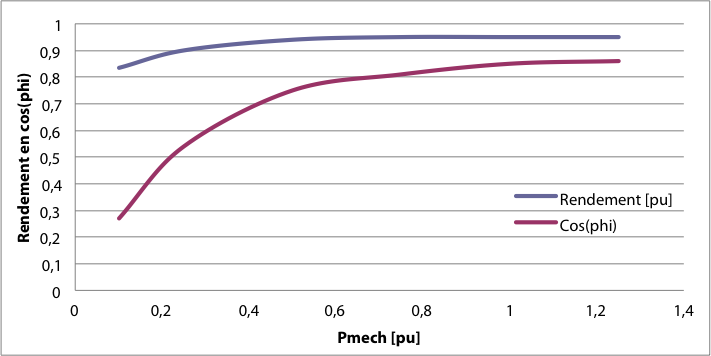From this data, the motor impedances can be derived (Cotton, 1967). For the load flow, the following simplification is often sufficient:
 |
[ |
8.77 |
] |
with:
| PM | electrically consumed active power |
| QM | reactive power consumed for the chosen operating point |
| cos(φ) | power factor for the chosen operating point |
| alpha | distribution between the constant power and constant impedance part |
From the above, it is evident that the active electrical power depends on the requested mechanical power and that the reactive power depends on the requested mechanical power and the voltage. For the distribution α between the constant power and constant impedance part, a value of 0.5 can be chosen.
An asynchronous machine can be considered a special type of transformer with a small air gap in the magnetic circuit. Therefore, a squirrel-cage motor can be seen as a transformer permanently short-circuited on the secondary side, where the resistance in the secondary circuit depends on the rotational speed. When starting the motor from a standstill, the slip issequal to 1. As a result, the resistanceRrotorin the rotor circuit small and the starting current is large. The starting current of an asynchronous motor is always specified and is typically in the range of 6 to 8 times the nominal current. In the specifications, this is usually referred to as the starting current ratioIa/Inomspecified. The power factor at startup is usually small and is in the order of 0.1. Sometimes thecos(φ)a) specified and sometimes theRM/XMratio at startup. Below is an indication of how these values can be converted into each other.
[ |
8.78 |
] |
There are several ways to limit the high inrush current of an asynchronous motor. These methods essentially involve reducing the voltage on the stator windings:
Asynchronous motors contribute to the short-circuit current because they are still running at nominal speed when the short circuit occurs. From that moment, the motor will not suddenly come to a stop but will continue to operate as a generator for a short period. Until the motor comes to a complete stop, it will thus contribute to the short-circuit current. The magnitude of the short-circuit current contribution is determined by the short-circuit impedance of the motor, which is calculated from the inrush current ratio.Ia/Inom:
[ |
8.79 |
] |
With the help of theRM/XMratio of thecos(φ)a) during startup, the distribution betweenRMenXMcalculated:
[ |
8.80 |
] |
If theRM/XMratio of thecos(φ)a) are not specified during startup, the following assumptions can be made according to IEC 60909:
Motortype |
RM/XM |
Medium voltage motor; power per pole pair ≥ 1 MW |
0.10 |
Medium voltage motor; power per pole pair < 1 MW |
0.15 |
Laagspanningsmotor |
0.42 |
The short-circuit impedance in the inverse system is taken to be the same as that of the normal system. Asynchronous motors are usually connected in a delta configuration, resulting in an infinite homopolar impedance. If the stator windings of the motors are connected in a star configuration with a grounded neutral point during normal operation, the homopolar impedance must be specified by the manufacturer.
Motors that are directly connected to the grid during normal operation will always contribute to the short-circuit current in short-circuit situations. If the motor is controlled using a converter, it depends on the converter whether and how much it contributes to the short-circuit current. Most converters do not allow current to flow in the reverse direction and therefore will not contribute to the short-circuit current. There are also converters that do allow reverse flow. These so-called 'Reversible static converter-fed drives' will contribute to the short-circuit current to a lesser extent. The IEC 60909 standard assumes the following:
Converters usually power motors that need to run at variable speeds. Rectifiers, on the other hand, power different processes. Railways and tramways are also powered via rectifiers. Therefore, the electrical behavior from the grid's perspective is very diverse. In most load flow calculations, a simple general load model is often sufficient, where the load is determined by the underlying process. It is also often assumed that the power factor is equal to 1, so no reactive power is consumed.
Rectifiers do not contribute to the short-circuit current. Converters sometimes provide a short-circuit current contribution. For this, a value of up to 1.2 times the nominal current is usually assumed.
The power generated by the wind turbine is produced by a synchronous or asynchronous generator or by a doubly-fed asynchronous generator, which is driven directly or via a gearbox by the wind turbine blades. The generator is connected to the grid either through a converter or directly. Figure 8.22 shows the generated power as a function of wind speed. The power depends on the cube of the wind speed. Below a certain low wind speed, the power is zero because the generator is no longer able to produce net power. Above a certain wind speed, the delivered power is limited by the nominal power of the generator. The characteristic then shows a flat curve, and the power no longer increases with increasing wind speed. Above an even higher wind speed, the wind turbine is taken out of operation to prevent mechanical damage.
[ |
8.81 |
] |
with:
| Pnom | nominal generator power (MW) |
| Vnom | nominal wind speed (m/s) |
| Vact | actual wind speed (m/s) |
In asynchronous generators, there is 'slip'. This is the deviation of the generator speed relative to the synchronous speed. It is calculated as follows:
[ |
8.82 |
] |
In the example of figure 8.23, a slip of +35% corresponds to 975 RPM and a slip of -35% corresponds to 2025 RPM. A higher rotational speed is not allowed to prevent damage. The relationship between rotational speed and wind speed is a characteristic of the wind turbine.
The rotational speed of the rotor is much lower than the electrical frequency. Therefore, a gearbox and multipole machines are often used. There are four main types of wind turbine systems:
The asynchronous machine in a fixed-speed wind turbine is directly connected to the grid. The rotor speed is essentially determined by the gearbox and the number of pole pairs of the generator. This type of wind turbine often has two fixed speeds: one for low wind speed and one for high wind speed. This allows the wind turbine to operate more frequently around an optimal torque. This system was widely used between 1980 and 1990.

The asynchronous machine in this wind turbine delivers active power and absorbs reactive power. The active power depends on the wind speed. The reactive power is determined by the machine parameters. A capacitor bank is included in the wind turbine to compensate for the reactive power. In many cases, the capacitors are automatically switched on depending on the delivered power. In the event of a short circuit, the wind turbine contributes to the short-circuit current.
Figure 8.25 shows a model of this wind turbine. The asynchronous generator is connected in the nacelle via several parallel cables. It is assumed that the transformer is located at the base of the mast. If the transformer were located in the nacelle, the parallel cables would be unnecessary. The capacitors for reactive power compensation are modeled as a single capacitor connected to the secondary side of the transformer. The capacity of the capacitor depends on the produced active power. It is clearly visible that the asynchronous generator produces active power and absorbs reactive power. This reactive power is compensated by the capacitor.
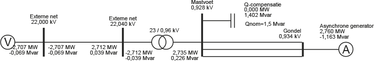In the wind turbine system in figure 8.26, the stator of the generator is connected to the grid via a converter. The generator can be an asynchronous squirrel-cage generator or a synchronous generator. The gearbox is designed such that the maximum rotor speed corresponds to the nominal speed of the generator.
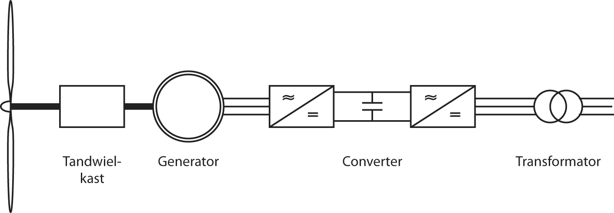In the case of a synchronous generator, it can be equipped with a higher number of pole pairs, making a gearbox unnecessary (Figure 8.27). Since there is extensive experience with the application of these 'full-power' converter/generator systems, the concept is well-developed.

The wind turbine delivers active power. The exchange of reactive power with the grid is regulated by the converter. In the event of a short circuit, the wind turbine provides little to no contribution to the short-circuit current.
Figure 8.28 shows a model of this wind turbine. The generator is connected in the nacelle via several parallel cables. It is assumed that the transformer is located at the base of the tower. If the transformer were located in the nacelle, the parallel cables would be unnecessary. Since the generator is positioned behind a converter, it is modeled together with the converter as a synchronous generator with a fixed cos(φ). In the example, the cos(φ) is equal to 0.9835.

To limit the maximum short-circuit contribution of the generator with converter to 1.2 times the nominal generator current, the subtransient reactanceXd"of the synchronous generator is calculated as follows:
[ |
8.83 |
] |
with:
 |
[ |
8.84 |
] |
Example:
SG,nom= 3 MVA
UG,nom= 0.96 kV
IGnom= 1.8 kA
Ik" = 2.2 kA
ZG= 0.256 Ω
Neglecting the generator resistance, this results in the following for the subtransient reactance:xd" = 0.83 pu.
The wind turbine system in figure 8.29 is equipped with a doubly-fed induction generator (DFIG). This means that the stator is directly connected to the grid and the rotor winding is connected to a converter via slip rings. Particularly because the power electronic converter only needs to supply about a quarter of the total power, this concept has become very popular for variable speed wind turbines, as the losses in the converter are much less than in a system with a 'full-power' converter. Additionally, the converter is cheaper.

The converter is a 'back-to-back' converter and consists of two converters with a direct current link between them. The converter connected to the rotor windings controls the torque, speed, and power factor at the stator terminals.
During normal operation, the wind turbine behaves like a synchronous machine. By regulating the frequency of the current through the rotor winding, the generator can still run synchronously at any desired rotor speed. The rotor winding is supplied with an alternating current in such a way that the electromagnetic field in the air gap compensates for the difference between the rotor and stator fields.

The mechanical power is calculated analogously to equation 8.81 as a function of wind speed. The following equation describes the relationship between the mechanical and the total electrical power.
 |
[ |
8.85 |
] |
In this equation, the efficiency represents the conversion of the entire system, including the gearbox, the generator, and the converter. The electrical power of the wind turbine is equal to the difference between the stator power and the rotor power, assuming that for positive values, the stator supplies electrical power and the rotor absorbs electrical power:
 |
[ |
8.86 |
] |
The distribution between the stator power and the rotor power is determined by the slip.s.
[ |
8.87 |
] |
In a wind turbine driven by sufficient wind, the generator operates 'above synchronous' and the slip is negative. For example, with a slip of -0.3 (-30%), the rotor speed is 1.3 times the synchronous speed. The stator power is then 0.77 timesPeland the rotor power is then -0.23 timesPelThat means that at full power, approximately three-quarters of the wind turbine power comes from the stator circuit and one-quarter from the rotor circuit. At no load, the slip is zero, and both the stator and rotor power are zero.
In the event of a short circuit in the grid, the wind turbine contributes to this short circuit, and the stator current becomes large. Consequently, the rotor current will also become large. To protect the power electronics in the converter, the rotor circuit is immediately short-circuited. As a result, the generator behaves as an asynchronous machine during the short circuit.
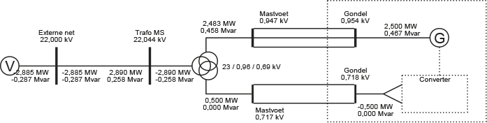Figure 8.31 shows a model of this wind turbine. The generator is connected in the nacelle via several parallel cables: separately for the stator circuit and the rotor circuit. It is assumed that the transformer is located at the base of the mast. If the transformer were located in the nacelle, the parallel cables would be unnecessary. The transformer is a non-regulable three-winding transformer (Dyn5yn5) that feeds the rotor and stator circuits of the doubly-fed asynchronous generator. In the model, the generator is split into the rotor and stator circuits. The stator is modeled with the model of a synchronous generator. The rotor is connected via a converter. The rotor power is modeled with a constant power load.
The active power delivered by the generator is calculated using equations 8.81 and 8.85. The distribution of the active powers delivered by the stator and rotor depends on the slip (Figure 8.23) and is calculated using equation 8.87.
It is assumed that the converter does not supply reactive power, so the total reactive power is supplied by the stator of the generator. The value follows from the cos(φ), assuming that the generator supplies reactive power:
[ |
8.88 |
] |
During a short circuit, a protection device (crowbar) directly shorts the rotor circuit of the generator, causing the machine's character to change from a doubly-fed to a normal asynchronous generator, which contributes to the short-circuit current. The converter will not contribute to the short-circuit current. The behavior during a short circuit is primarily determined by the subtransient impedance.zd", the value of which can be calculated from the maximum short-circuit current contribution:
 |
[ |
8.89 |
] |
Hereafter, the distribution overrgenxd"according to equation 8.80 calculated from the R/X ratio of the generator.
Phase to Phase is onderdeel van Technolution. © 2009-2021